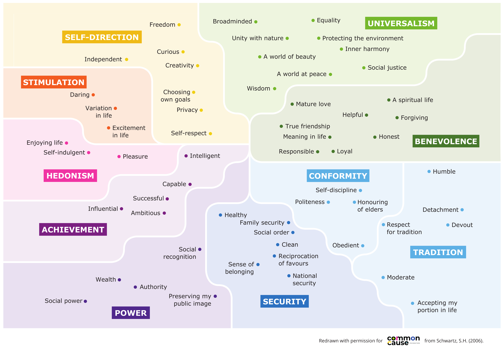

Part 1: Understanding values in journalism
In social psychology, values are deeply held guiding principles that shape our attitudes and behaviours, and which are, in turn, shaped by the world around us. We can think of values as an internal compass that influences what we pay attention to, what we care about and how we treat others.
The Schwartz Values Framework
One of the most widely used frameworks for understanding values comes from the social psychologist Shalom Schwartz, whose research drew on data from people in nearly 100 countries11. Schwartz identified a set of seemingly ‘universal’ human values – things like benevolence, equality, achievement, security, creativity and power – that are held across many different cultures, though in different proportions. Crucially, we can all access all of these values, but what feels most meaningful to us at any moment is influenced by our environment – including what we read, watch and listen to.

Redrawn with permission from Schwartz, S.H. (2006). Full references in Resources.
A 2025 study analysing half a million Facebook posts about COVID-19 from a range of Romanian and UK news outlets found that values references were present across all coverage. Journalism is not values neutral. Every editorial decision – which issues get covered, how headlines are written, whose voices lead, what images accompany text – involves a judgement about what matters. Those judgments are shaped by values, whether they are the journalist’s own, embedded in the outlet’s culture, assumptions about the audience, or arising from commercial needs. All of these editorial decisions send signals about what matters in the world and what people should care about.
Journalism scholars Claudia Mellado and Constanza Gajardo found a significant gap between what journalists assume people want from them and what audiences themselves emphasise. Journalists highlighted objectivity, independence and accuracy, while audiences wanted approachability, empathy and the ability to communicate in ways that emotionally resonate. Audiences described these as relational, humanistic qualities. This mirrors what Common Cause Foundation’s own research consistently finds. People care far more about connection, care and community than the media tends to assume or reflect.
How values work
It’s hard to hold strongly opposing values at the same time. This is especially true of intrinsic and extrinsic values, which exist in a kind of tension.
Intrinsic values
Inherently rewarding. They include: equality, social justice, interconnectedness with nature, creativity, curiosity, freedom and self-direction.
Extrinsic values
Depend on external approval. They include: wealth, power, social status, achievement, public image and authority.
Research by a number of psychologists has found that everyone naturally holds both intrinsic and extrinsic values, but when extrinsic values are made more prominent in a person’s mind, it temporarily suppresses intrinsic ones, and vice versa. We call this the ‘seesaw effect’. So when values on one end of the spectrum are elevated, those on the other side are diminished.
Part of why this happens is psychological. Extrinsic values align with deep survival instincts – we are wired to notice threats and seek rewards. Negative news, wealth narratives and powerdynamics easily tap into these instincts.
Psychologists Kennon Sheldon and Tim Kasser found that when people feel like they’re psychologically threatened – whether by existential, economic or social threat – they shift toward prioritising extrinsic goals, like wealth, status or appearance, over intrinsic ones, like community or personal growth. This reflects something real about human attention and it means that extrinsic framings will often find a ready audience, which can reinforce their dominance without anyone consciously choosing that outcome.
A headline frames NHS staffing shortages as "costing taxpayers £X billion" rather than highlighting patient care or staff wellbeing. The implicit message? Economic value matters most. And repeated enough, across enough outlets, this framing shapes what feels like the 'obvious way' to cover health issues.
The problem isn’t economics itself, it’s when economic framing becomes the default, crowding out other legitimate grounds for concern, such as human dignity, community, or the inherent value of life.
We can think of values like muscles – the more they are used, the stronger they become. The opposite is also true. Consistent exposure to extrinsic values normalises them, making it harder for people to access the intrinsic values that research shows most people hold. And, when the world around us seems to tell us that things like wealth and power matter most, something happens – we start to believe that other people care more about these things than they actually do.
The values we think other people prioritise – and why this matters
When people believe that others are motivated by self-interest, they are less likely to get involved in their communities, more likely to feel isolated, are less trusting, less supportive of collective and environmental action and less likely to volunteer. In this way, the gap between what people value and what they believe others value erodes the fabric of society
We do not yet have a comprehensive study of UK media content analysed using Schwartz’s framework, something that would allow us to map coverage alongside the values most people hold. However, the existing evidence all points in the same direction. Decades of research on ‘news values’, effectively the professional criteria used to judge newsworthiness (timeliness, conflict, impact, prominence etc), has shown over time that conflict, money, power and threat consistently dominate story selection. These align closely with extrinsic values. Our own research found that most people see the media promoting extrinsic over intrinsic values too.
“Extinction Rebellion protestors have blocked a main route into Bristol that leads to the M32. Commuters faced long delays after the campaigners gathered at Cabot Circus amid a series of protests.” Source: BBC
When a story about environmental protection is framed as good for business or not, and suggests this is what others care about too, this doesn’t simply add context. It shifts the audience towards extrinsic values, making it harder for them to connect with the intrinsic reasons we care about nature, or nature’s inherent worth.
Values awareness and objectivity
Some journalists might question whether paying attention to values means abandoning objectivity or introducing bias. However, the selection and framing of facts is always informed by values – and there is nothing inherently wrong with that – it’s impossible to avoid.
The question is whether that choice is made consciously or unconsciously, and whether it is transparent or hidden. A journalist who never considers the values in their choices is not more objective – they are simply less aware of the assumptions shaping their work, and arguably less ‘objective’ as a result.
We must also note that many people already feel that the news doesn't presents things impartially. For example, research by the Reuters Institute drawing on focus groups with disadvantaged communities across the UK, US, Brazil and India found that women and people from lower socioeconomic groups show a clear preference for news that openly addresses their perspectives and experiences. This is because mainstream journalism has historically, if often unconsciously, reflected the viewpoints and interests of more privileged groups.
So-called neutral framing is rarely neutral when looking at whose experience it centres. Values awareness helps to make that visible.
"A journalist who never considers the values in their choices is not more objective – they are simply less aware of the assumptions shaping their work, and arguably less 'objective' as a result."
Values awareness is not
- · Imposing your politics on your audience
- · Abandoning facts or accuracy
- · Becoming an advocate for particular policies
- · Choosing sides in partisan debates
Values awareness is
- · Recognising that all journalism involves values choices
- · Making those choices intentional and transparent rather than unconscious or hidden
- · Understanding the cultural footprint of your editorial decisions
- · More accurately reflecting the values that most people hold
As journalism scholars Bill Kovach and Tom Rosenstiel have argued, and as media theorist James Carey wrote in his foundational work on journalism’s civic purpose, the function of journalism is not just to relay facts, but to help people understand the world and participate in it. Values awareness strengthens that function.
Part 2: Values patterns in UK media
These patterns have become invisible precisely because they are so familiar. Decades of research on 'news values' has shown that conflict, money, power and threat consistently dominate story selection – aligning closely with extrinsic values.
| Value emphasised | What it looks like | What it reinforces | Alternative approach |
|---|---|---|---|
| Wealth | Leading stories with economic arguments. Measuring impact in pounds and GDP. | The idea that things only matter if they have economic value. | Lead with community impact, human experience, significance to the natural world. |
| Individual achievement | Individual success stories. 'Rags to riches' narratives. Celebrity and hero focus. | That change comes from exceptional individuals rather than collective action. | Highlight collective efforts, community initiatives, shared successes and systemic solutions. |
| Security | Emphasising fear and disagreement. Focusing on what divides rather than what connects. | A heightened sense of threat and insularity. The world seen as more dangerous than it is. | Explore root causes, common ground and collaborative solutions. |
| Institutional authority | Officials frame the story. Affected communities appear late as 'human interest'. | A hierarchy of whose knowledge matters. Expert knowledge prioritised over lived experience. | Rebalance who leads the story. Treat community knowledge as expertise. |
| Public image | Celebrity coverage framed as news. "Best dressed" lists. Social-climbing narratives. | That worth depends on how you are perceived. Status matters more than substance. | Question these framings. Ask what values drove the person beyond status and wealth. |
Part 3: Your context
Many journalists chose this career because they care deeply about the world – they're motivated by their intrinsic values. But many work within organisations where profit and shareholder value dominate. Making values conscious doesn't change that fact. But wherever you sit, you have some sphere of influence, even if it's small.
See the Apply It section for guidance tailored to your specific context – independent outlets, commercially driven organisations, or those working for structural change.
Part 4: The framework – three stages of values awareness
This framework describes three stages of values awareness, from unconsciously reinforcing certain values, to being transparent about values in ways that better reflect what most people care about. Think of it as a stairway rather than a checklist – each stage builds on the previous one and the movement is gradual.
Unconsciously reinforcing certain values
"We just report the facts."
Becoming aware of the values in your work
"We recognise that journalism is value-laden."
Transparent and responsible values practice
"We name the values in our journalism and work to close the values perception gap."
These stages are not about 'good' or 'bad' journalists. Most UK journalism currently operates at Stage 1, not because journalists are doing something wrong, but because values awareness is not part of professional training or culture.
Unconsciously reinforcing certain values
"We just report the facts."
At Stage 1, journalism operates with a genuine belief in values-neutrality and a professional commitment to objective reporting. Values are present in every choice, but go unnoticed.
What this looks like
- You think of your work as 'reporting the facts' and your professional identity is built around being an 'objective observer'
- You haven't thought much about values – your own, your organisation's, or those embedded in professional norms
- You tend to follow established professional conventions about how stories are told
- You haven't noticed consistent patterns in how your coverage foregrounds certain values over others
A story about a new housing development quotes the local council, a property developer and an economist, noting that average house prices are expected to rise 8% following the build. A family on the housing waiting list appears in paragraph 10 as a 'human interest' angle. Nobody made a conscious choice to frame housing as an asset class – it reflects how housing stories have been written for decades.
Moving to Stage 2 – start asking
- What values might this framing foreground?
- Is there another way to tell this story?
- Whose perspective am I centring and why?
- What am I assuming about what matters to my audience?
Conscious awareness of values
"We recognise journalism is value-laden."
At Stage 2, you begin to see values everywhere in your work and you can't unsee them. This awareness creates choices.
What this looks like
- You recognise that all journalism involves values choices
- You notice how editorial decisions signal what matters and how the media helps shape cultural values
- You understand the values perception gap and the media's role in it
- You are beginning to question why 'we've always done it this way'
- You may feel some tension between your growing awareness and your existing practice
A crime reporter notices that coverage always emphasises punishment over rehabilitation and starts asking editors: "Could we try a different framing?". An environment editor questions why climate coverage always leads with economic arguments. A freelance journalist realises pitches framed around community care get less traction than those framed around local conflict, and begins documenting this pattern.
Two paths from Stage 2
Once aware that journalism is values-laden, you face a choice. Path A treats values as tools to achieve predetermined ends – selecting or framing them strategically to persuade. Path B involves genuine inquiry into your own values, your organisation's, and those present in your work. Only Path B leads to Stage 3.
Transparent and responsible values practice
"We name the values in our journalism and work to close the perception gap."
At Stage 3, values awareness becomes visible and active. This stage has two related but distinct dimensions: being transparent and being responsible.
What this looks like
- Being explicit: you name the values that shape your coverage rather than leaving them implicit
- Being transparent: you let audiences know how and why editorial decisions are made
- Being consistent: what you say about your values is reflected in what you publish
- Being active: you make conscious choices in editorial decisions to consider what values are being foregrounded
- Being socially responsible: you actively work to close the perception gap
- Being open: you create space for audiences to reflect on what matters most to them
Four approaches to Stage 3
- Personal and informal disclosure – naming your values in spaces you control (social media bio, newsletter, about page)
- Transparent editorial principles – publishing honest articulations of the values guiding editorial decisions at outlet level
- Inviting audience reflection and dialogue – creating space to explore what matters to audiences in the issues you cover
- Structural accountability – building accountability mechanisms into how an outlet operates, such as member governance